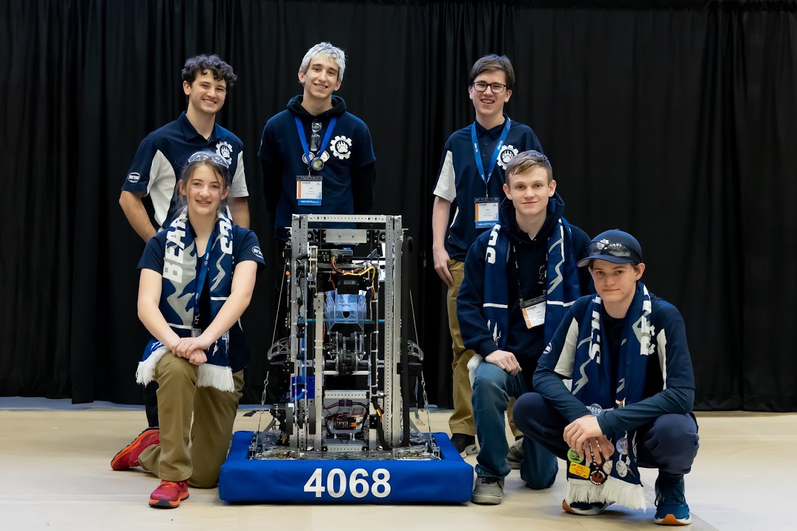
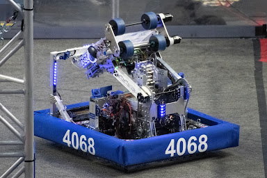
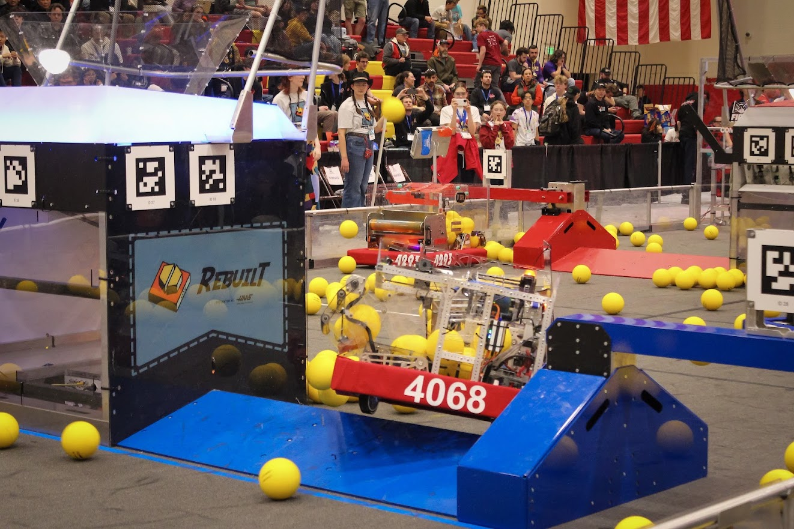
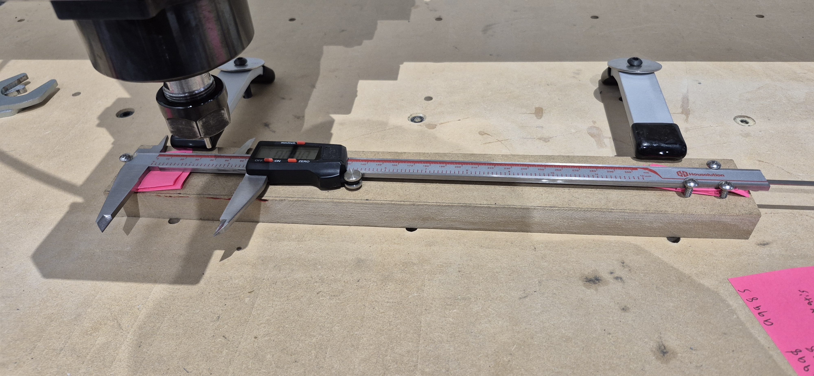
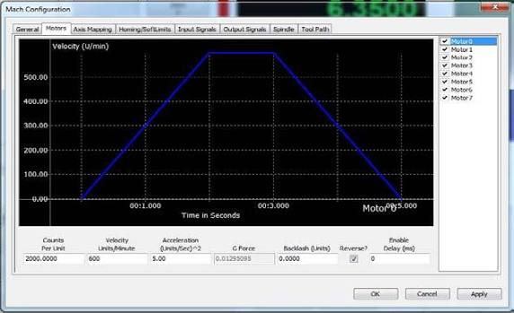

Engineering
CAM, workholding, tooling, sheet processing, inspection, and finished robot components.

CAM, workholding, tooling, sheet processing, inspection, and finished robot components.
Training students, managing priorities, coordinating with CAD, and keeping production moving under deadlines.
Backlash, steps-per-unit, gantry synchronization, limit switches, accuracy checks, and failure recovery.
My first season was about learning how the team turned ideas into a working competition robot. I began developing an understanding of manufacturing, machine operation, part inspection, and the relationship between CAD design and the physical assembly.


As I gained experience, I took on more responsibility for planning and producing robot components. I coordinated with CAD and mechanical teams, organized parts by material and build order, and began helping other students learn the manufacturing workflow.


I coordinated manufacturing around the robot's assembly sequence, considering stock size, material, tooling, and which parts were needed first. This helped connect the manufacturing schedule to the mechanical team's progress. I also started explaining not just which steps to follow, but why each setup and inspection step mattered.
By this stage, I had developed a stronger role in fabrication and troubleshooting. I helped keep production moving during a critical machine failure and worked with the team to diagnose, repair, and recalibrate the CNC router so we could continue producing accurate robot parts.

